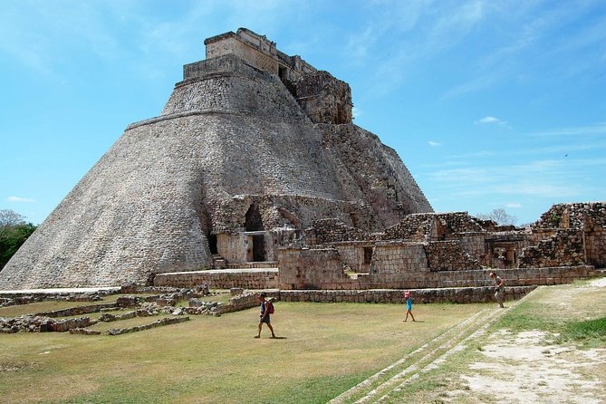

Uxmal
Santa Elena, Yucatán
Uxmal está localizada en el municipio de Santa Elena en el estado de Yucatán, México.
En el área maya es uno de los más importantes yacimientos arqueológicos mayas,
junto con los de Chichén Itzá y Tikal. Se ubica en la llamada zona Puuc y es la ciudad más representativa de este estilo arquitectónico.
Uxmal fue declarada Patrimonio de la Humanidad por la UNESCO en 1996.
Panorámica de Uxmal.
Se localiza a unos 80 km al sur de Mérida, ciudad capital del estado de Yucatán, en el sureste de México. Sus edificaciones destacan por su tamaño y decoración. Entre ellas, así como entre otras ciudades de la zona, hay construidas unas calzadas llamadas sacbés que en idioma maya significa «camino blanco».
Se localiza a unos 80 km al sur de Mérida, ciudad capital del estado de Yucatán, en el sureste de México. Sus edificaciones destacan por su tamaño y decoración. Entre ellas, así como entre otras ciudades de la zona, hay construidas unas calzadas llamadas sacbés que en idioma maya significa «camino blanco».
Costo por accesso: Si